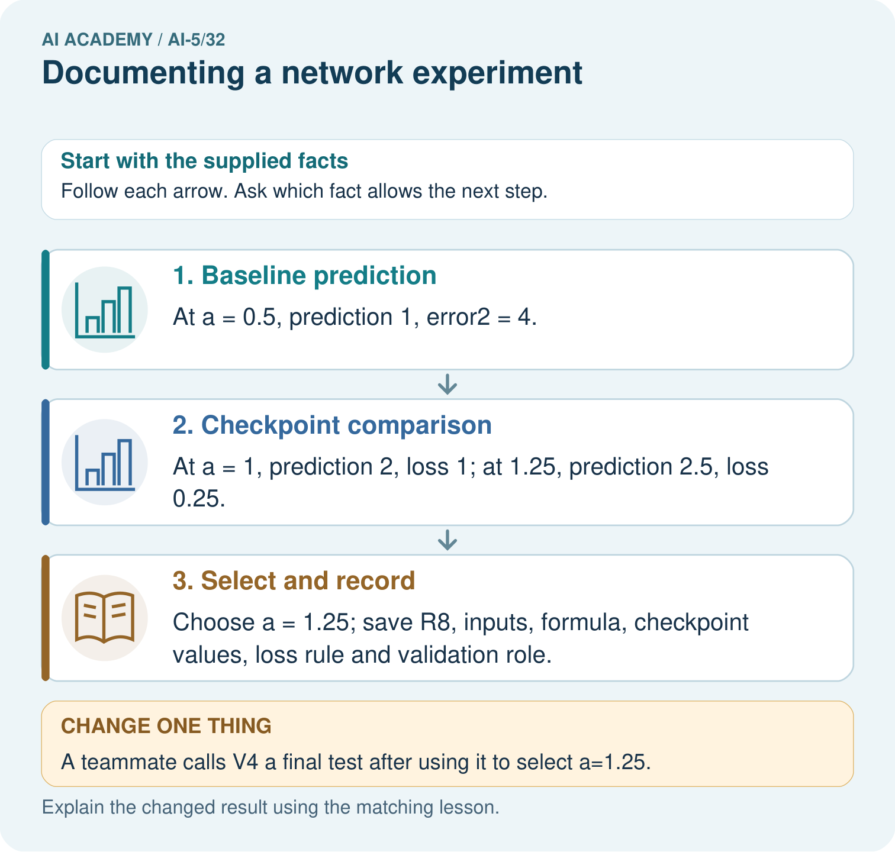

AI Academy · Level 5 · Grade 10 · Week 32 · Student lesson
Documenting a network experiment
Learn to understand, design, build, test and explain AI systems responsibly.
Project: Image-pattern Network Investigation
Before you start
Why is “the model was fast and accurate” insufficient as an experiment record?
Plan time to read, investigate and explain. Keep predictions separate from observations.
Student lesson · 1 of 14
Your mission
Your learning target
I can record a network experiment with enough detail to replay its calculations.
I can trace reported metrics to data roles and saved parameters.
I can write a bounded conclusion and identify missing evaluation evidence.
Remember before reading
Close your notes first. A rough first answer helps us choose the right starting point; it is not a score for your ability.
Without opening the old lesson, explain one key idea from Efficiency and resource measurement. Give an example and a mistake that the idea helps you avoid.
Without opening the old lesson, explain one key idea from Uncertainty and failure analysis. Give an example and a mistake that the idea helps you avoid.
Without opening the old lesson, explain one key idea from Embeddings and neighbourhoods. Give an example and a mistake that the idea helps you avoid.
After trying, check the relevant lesson or ask your teacher. Change the part of your explanation that the evidence shows was wrong.
This week you will practise:
Record a network experiment with enough detail to replay its calculations
Trace reported metrics to data roles and saved parameters
Write a bounded conclusion and identify missing evaluation evidence
Retrieve what you already know
Why is “the model was fast and accurate” insufficient as an experiment record?
This week’s end goal
By the end, I can explain documenting a network experiment using a traced example and a stated limitation.
Student lesson · 2 of 14
Notice the evidence
A useful experiment record explains what was asked, what was done, what happened and what remains unknown. Use run NN32-A: does fitting one positive ReLU weight reduce validation mean squared error compared with its initial value? This tiny constructed regression task teaches record keeping; it cannot establish performance on real-world data.
| Data role and ID | Input x | Target y |
|---|---|---|
| Training T1 | 1 | 2 |
| Training T2 | 2 | 4 |
| Validation V1 | 3 | 6 |
The network predicts max(0, a*x), with one weight a and no bias. Start at a = 1, use learning rate 0.1, two full-batch training updates and mean squared error, the mean of squared prediction errors. There is no normalisation, random initialisation or shuffling. Use Python float arithmetic and record the actual Python version when replaying.
Before running, set the selection rule: choose the checkpoint with the smaller validation MSE, breaking a tie toward the earlier update. The initial model is the baseline. Validation V1 chooses a checkpoint but never contributes to the training gradient. Final evaluation has not been run; its result must be recorded as not measured.
Student lesson · 3 of 14
See how it works
For these two training cases, MSE = 2.5*(a - 2) squared and its gradient is 5*(a - 2). At a = 1 the gradient is -5, so the first update is 1 - 0.1*(-5) = 1.5. The next gradient is -2.5, giving a = 1.75. All preactivations in this run stay positive, so ReLU’s derivative is one; this is not a general backpropagation implementation.
train = [(1.0, 2.0), (2.0, 4.0)]
validation = [(3.0, 6.0)]
def predict(a, x):
return max(0.0, a*x)
def mse(a, rows):
return sum((predict(a, x)-y)**2 for x, y in rows) / len(rows)
a, rate = 1.0, 0.1
baseline = mse(a, validation)
records = []
for update in [1, 2]:
gradient = sum(2*(a*x-y)*x for x, y in train) / len(train)
a -= rate * gradient
records.append((update, a, mse(a, train), mse(a, validation)))
chosen = min(records, key=lambda r: (r[3], r[0]))
print(baseline, records, chosen[0])The code assumes the supplied nonempty numeric datasets and positive preactivations. Each record stores update number, weight, training MSE and validation MSE after the update. Keep both records, the initial weight and the rule; saving only the best score erases how the choice was made.
Connect the picture and the explanation
Point to the input, the deciding step and the result in this week’s visual. Explain the same step in ordinary words. A picture helps when you can say what each part represents.
Student lesson · 4 of 14
Compare the cases
Compare a familiar case with a changed case
Calculate both weight updates and give each training and validation MSE. Name the selected checkpoint and baseline validation MSE. How many independent validation examples support the comparison?
Change one thing in the pictured case
Change: A teammate calls V4 a final test after using it to select a=1.25.
Prediction: Correct its role to validation; it was used for selection.
Reason: Changing the label on a dataset does not make its evidence untouched.
Student lesson · 5 of 14
Words that unlock the idea
| Word | Meaning |
|---|---|
| Run identifier | A unique label linking one experiment’s settings, outputs and records |
| Checkpoint | Saved model parameters at a specified stage of training |
| Manifest | An inventory connecting named artifacts with versions, roles and integrity information |
| Replay | Repeating a recorded procedure to check whether its outputs agree |
Student lesson · 6 of 14
Follow a worked example
Read each checkpoint against the same validation case
A defensible conclusion is: in run NN32-A, update 2 reduced MSE on the single constructed validation case from 9 to 0.5625 compared with the initial model. This checkpoint was selected using that same validation case; generalisation is untested. No timing, peak-memory or energy measurements are provided.
Learn from the worked case
Cover the result before checking it. Say what is given, choose the procedure, and follow one step at a time. Then uncover the result and explain your first mismatch. Ask why a step is allowed, not only what number it produces.
A pictorial worked case: Documenting a network experiment
Document checkpoint selection so another team can reconstruct every reported number.
The facts we will use
Run R8 predicts ReLU(a×x). Validation V4 has x = 2, target 3. Baseline a = 0.5; checkpoints a = 1 and 1.25; choose minimum validation squared error.
All inputs and outcomes in this worked example are invented classroom data; no real model run is claimed.


Read the picture one step at a time
Why this result follows
A reproducible record includes the actual input, formula, parameters and scoring rule, together with each dataset’s role. The validation case selects the best supplied checkpoint, so it is part of development. Save that selection history and freeze the checkpoint before evaluating fresh final cases. Renaming the same case a test does not change how it was used.
What this example does not establish
Reconstructing one run verifies arithmetic and provenance, not population performance or educational learning impact.
Student lesson · 7 of 14
Find and repair a mistake
Keep a manifest for the data with IDs and split membership, the exact code, settings, every checkpoint, raw prediction rows and metric calculations. Add run ID, author/date, environment versions, known data provenance and permitted use, failed attempts, decisions and limitations. A descriptive filename helps navigation, but does not prove that file contents stayed unchanged.
When saving artifacts, record their content hashes and keep the exact versions used. Hashes help detect content changes; they do not prove label correctness or experiment quality. Retain the input order, any training-fitted preprocessing, model architecture and numeric precision. Randomised experiments must also record seeds and the relevant random operations; a seed alone does not guarantee identical results across environments.
Ask a partner to replay from the record rather than from memory. If results differ, check inputs, split membership, preprocessing, configuration, code, parameters and environment. Document the discrepancy and the repair instead of overwriting the old record. A rerun on the same data checks the procedure; it does not add new independent evaluation cases.
Locate the earliest unsupported step
A folder contains only best-model.json and a screenshot of 0.5625. Identify four missing artifacts or records and explain what a content hash can and cannot verify.
Student lesson · 8 of 14
Practise together
For NN32-A, record the prediction rule, initial weight, bias policy, learning rate, update count, loss, training/validation IDs, data order or shuffling policy, and checkpoint selection rule. Name one environment field still to record when you run it.
Practise with less help: Trace the selected result
Use workbook W2 for the connected example “Documenting a network experiment”. First fill the input and rule boxes. Try the middle steps before asking for a hint. After a hint, try the next step yourself.
| Plan | Do | Check |
|---|---|---|
| What is given? Which rule or procedure applies? | Record each intermediate step. | Does the result follow? What remains unknown? |
Explain your trace to a partner. Your partner points to one step to check. Swap roles on the next case. Each person writes their own explanation.
Check your reasoning
Use the worked case for Documenting a network experiment. Proposed explanation: “A smaller MSE is an accuracy percentage”. Decide whether this explanation is supported. Point to the step or supplied fact that decides; explain your repair if needed.
Answer on your own before discussion. If you are unsure, say which step you need help with.
Explain the picture
What additional evidence is needed for a final performance claim? Point to the relevant step in the picture, then write the changed result and the rule or evidence that supports it.
This is supported practice. Keep the separately named independent case for an attempt before feedback.
Student lesson · 9 of 14
Run the investigation
Predict, investigate and preserve the evidence
Calculate both weight updates and give each training and validation MSE. Name the selected checkpoint and baseline validation MSE. How many independent validation examples support the comparison?
train = [(1.0, 2.0), (2.0, 4.0)]
validation = [(3.0, 6.0)]
def predict(a, x):
return max(0.0, a*x)
def mse(a, rows):
return sum((predict(a, x)-y)**2 for x, y in rows) / len(rows)
a, rate = 1.0, 0.1
baseline = mse(a, validation)
records = []
for update in [1, 2]:
gradient = sum(2*(a*x-y)*x for x, y in train) / len(train)
a -= rate * gradient
records.append((update, a, mse(a, train), mse(a, validation)))
chosen = min(records, key=lambda r: (r[3], r[0]))
print(baseline, records, chosen[0])| Record | Your evidence |
|---|---|
| Given input and fixed rule | |
| Prediction before checking | |
| Actual result, or “not run” | |
| First mismatch and one explanation | |
| Boundary or missing input and expected response |
On paper, trace the supplied procedure. If code is provided, predict before running it in a local practice file. Never write an expected answer as though it were an observed run.
Plan → try → check
Before trying: what do I expect, and why? While trying: which step could first go wrong? Afterwards: what did I actually observe, and what should change? Keep “not run” if you only traced the procedure.
Student lesson · 10 of 14
Build your understanding
Explain → apply → challenge
For NN32-A, record the prediction rule, initial weight, bias policy, learning rate, update count, loss, training/validation IDs, data order or shuffling policy, and checkpoint selection rule. Name one environment field still to record when you run it.
A folder contains only best-model.json and a screenshot of 0.5625. Identify four missing artifacts or records and explain what a content hash can and cannot verify.
A partner gets different results after changing preprocessing and replacing the validation file. They keep the old run ID and overwrite the old score. Explain what should be preserved and how the revised work should be recorded.
Student lesson · 11 of 14
Connect your project
Add a labelled documenting a network experiment evidence sheet to Image-pattern Network Investigation. Show how you can record a network experiment with enough detail to replay its calculations. Use the supplied fictional case and keep its inputs, intermediate steps, calculation or prediction, and limitation. Connect this record to last week’s record; a matching answer without a trace is insufficient.
| Project evidence | Record |
|---|---|
| Component and version | |
| Inputs permitted at prediction time | |
| Trace and comparison with earlier work | |
| Failure, limit and human review |
Evidence for your project
For your Image-pattern Network Investigation, save the input, procedure, observed result and limitation of this check. Label this worked example as practice; use a different, previously unreviewed case when checking independent understanding.
Student lesson · 12 of 14
Show what you know
Report missing measurements as not measured, not as zero. If a final set has influenced a change, document that use and reserve new untouched evaluation before making an independent performance claim. A polished report cannot fix leakage or missing evidence. For larger experiments, preserve denominators, subgroup results and resource conditions from Weeks 29 to 31.
Finish with a next action that follows from the limitations, such as planning a broader reserved evaluation without claiming it has already succeeded. Next week begins the capstone by defining a hypothesis and baseline before controlled experiments.
A partner gets different results after changing preprocessing and replacing the validation file. They keep the old run ID and overwrite the old score. Explain what should be preserved and how the revised work should be recorded.
Student lesson · 13 of 14
Study a complete case
Complete evidence record
Read each checkpoint against the same validation case
Follow the input through the stated procedure to its result. Cover the result first, predict it, then explain every intermediate step. The text/table accompanies the figure so the example can be read without colour.
Student lesson · 14 of 14
Try a new case independently
Independent case: Audit a new record independently
A separate run R17 records baseline a = 1 and checkpoints a = 1.5 and a = 1.75. It uses prediction max(0, a*x) and one validation case V9 with x = 4, y = 8. Compute baseline and checkpoint predictions and squared errors, choose by lowest validation MSE, and write a bounded conclusion. Final evaluation and runtime have not been measured.
Attempt this case before feedback. Record any help. Earlier examples below are further practice; a case already practised with feedback cannot establish fresh transfer.
Attempt this without hints
A separate run R17 records baseline a = 1 and checkpoints a = 1.5 and a = 1.75. It uses prediction max(0, a*x) and one validation case V9 with x = 4, y = 8. Compute baseline and checkpoint predictions and squared errors, choose by lowest validation MSE, and write a bounded conclusion. Final evaluation and runtime have not been measured.
Record support used: none, hint or teacher explanation. After feedback, a different case is needed to demonstrate independence.
Use feedback to improve
Attempt the independent case before hints. Record whether you worked alone, used a hint or followed a model. After feedback, fix the first unsupported step and explain why it changed. A later check uses a changed case, not a copied answer.